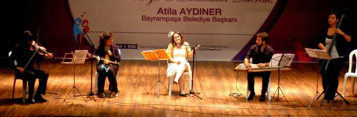

Taş Plak Kumpanyası'nı, 12 Ekim 2013 Bayrampaşa Kültür Merkezi'nde ilk dinleme fırsatım oldu. Raslantı eseri ibb kültür sayfasında Taş Plak Kumpanyası'nı gördüm.
Youtube'da birkaç şarkısını dinledikten sonra gitmeye karar verdim. 1 saatlik konser, içimi ısıttı. Konser bittikten dakikalar sonra bile, tatlı gülümsemeye devam ettim...
Bu kumpanya, taş plaklarda kalmış şehir müziğimizin eğlenceli yüzünü yeniden yaşatıyor: Kantolar, Fasıl şarkıları, Şehir Türküleri, Tangolar, bolerolar, çiftetelliler, fokstrotlar, rumca ve ladino şarkılar, Deniz Kızı Eftalya, Safiye Ayla, Seyyan Hanım, Bayan Radife, İbrahim Özgür, İstanbul’un Hanımları, incesazları… hepsi bu kumpanyada! İstanbul’un 1920 ve 30’lu yıllardaki müziğini duymak isteyenlerin kaçırmaması gerekir.